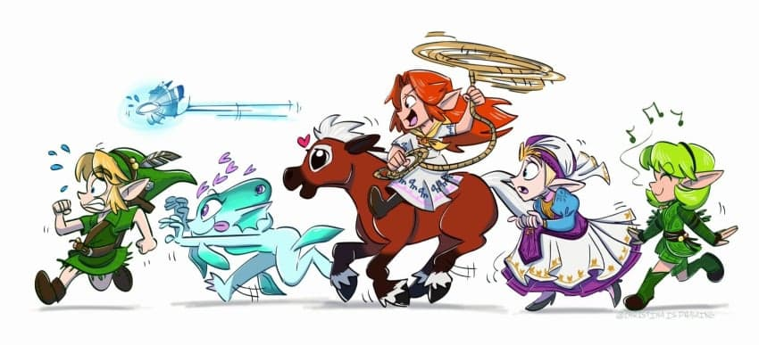
최근 발매된 시간의 오카리나 리메이크!
하지만 원작은 98년도에 발매한 만큼
야왕에서 시오의 흔적을 심심치 않게 찾을 수 있다
1. 장소
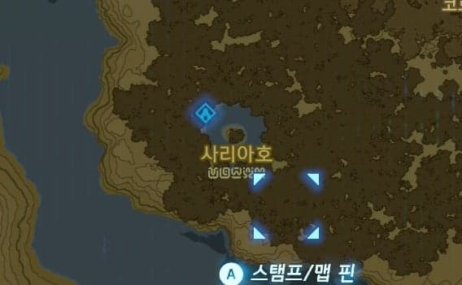
일단 히로인 중 한명인 사리아의 이름을 딴
'사리아 호'
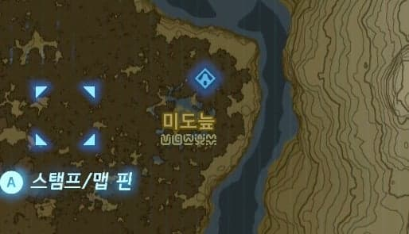
개구쟁이 미도의 이름을 딴
'미도늪'
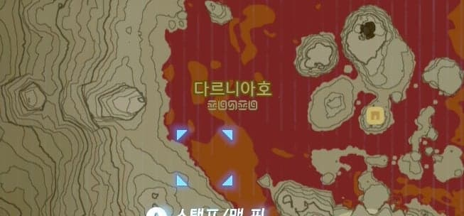
불의 현자 다르니아의 이름을 딴
'다르니아호'
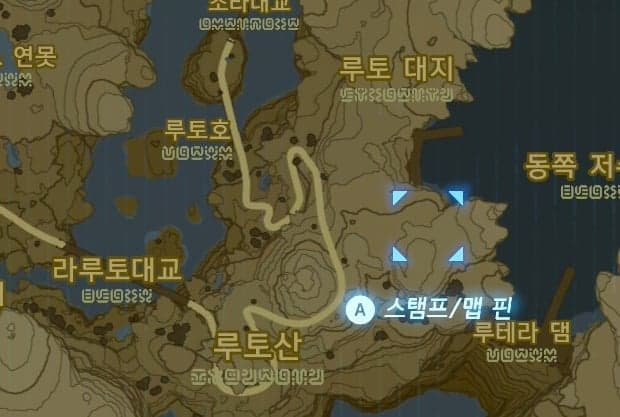
물의 현자 루토의 이름을 딴
'루토호', '루토산', '루토 대지'
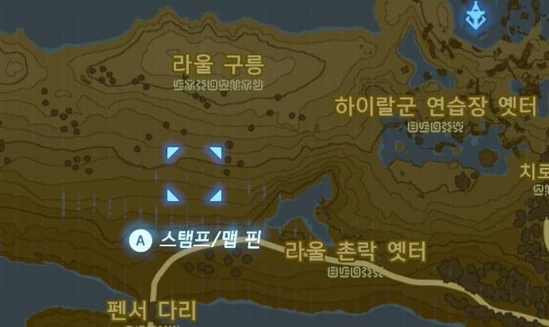
빛의 현자 라울의 이름을 딴
'라울 구릉', '라울 촌락 옛터'
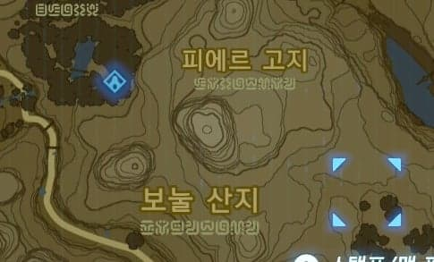
허수아비 친구들 피에르와 보눌의 이름을 딴
'피에르 고지', '보눌 산지'
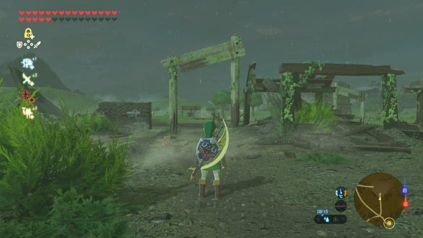
마론과 타론의 론론 목장이었던
'평원의 목장 옛터'
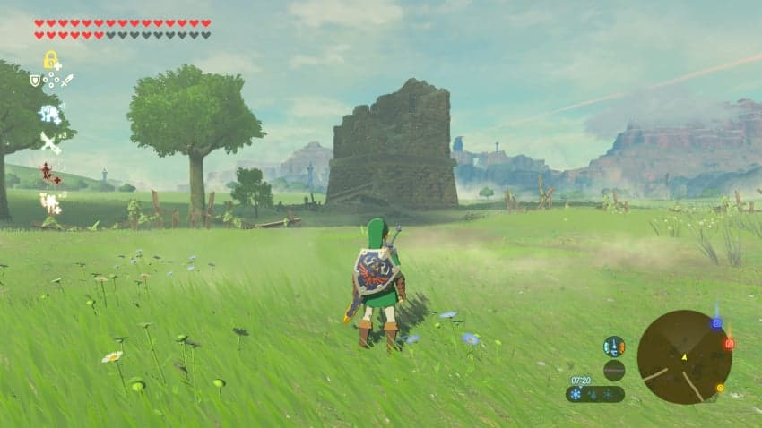
론론 목장 끄트머리에 있던
황금 타란튤라와 하트조각이 있던 건물도 찾아볼 수 있다
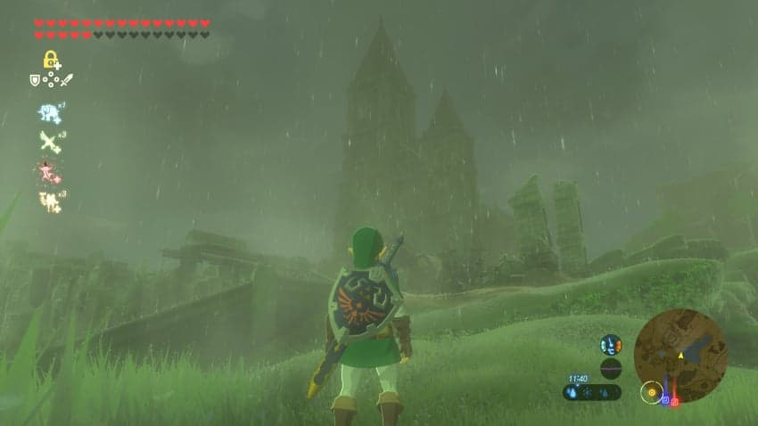
마지막으로 작중 중요한 장소인
'시간의 신전 옛터'까지
시간의 오카리나의 흔적을 찾아볼 수 있다
2. 요리할 때 링크의 콧노래
젤다의 자장가
에포나의 노래
사리아의 노래
3. 옷, 에포나
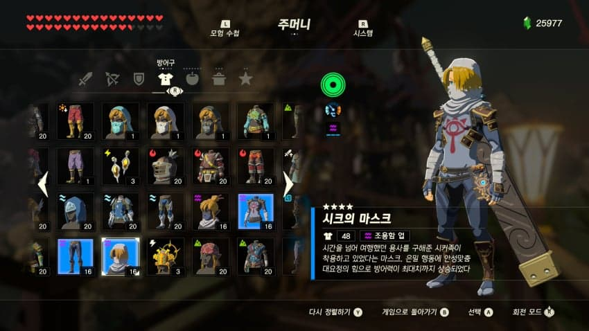
작중 링크를 도와주던 시크의 마스크
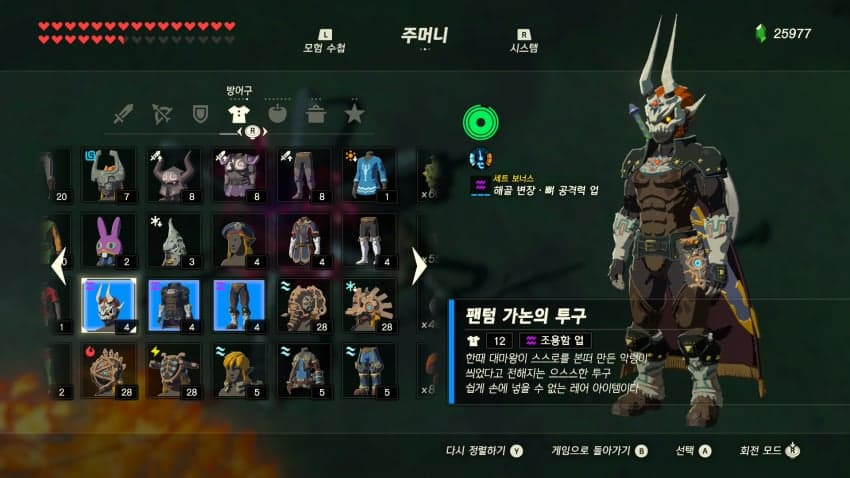
숲의 신전 보스인 팬텀 가논의 옷
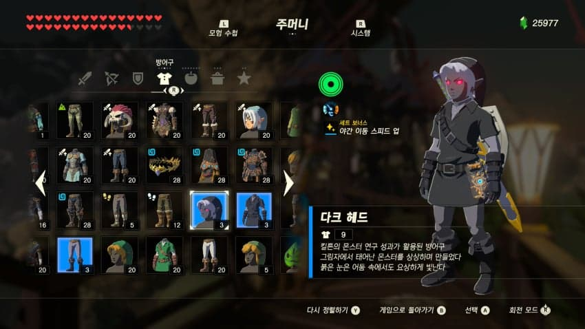
물의 신전 중간보스인 다크 링크의 옷
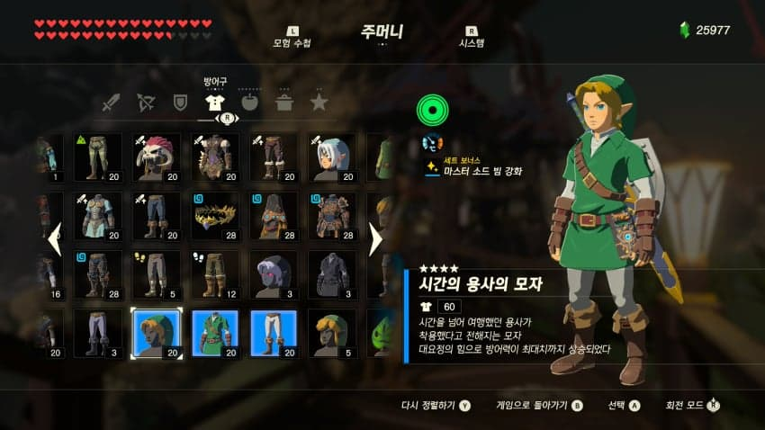
그리고 시간의 용사의 옷
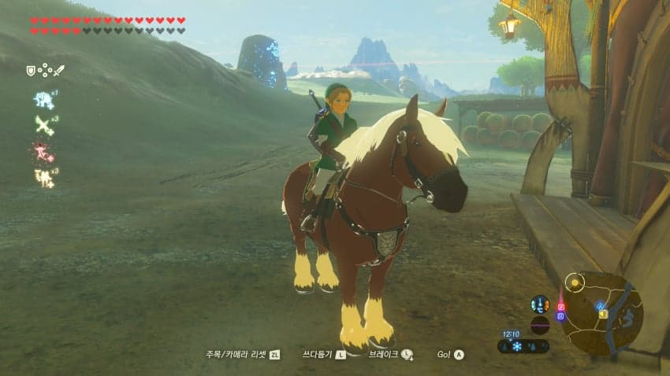
마지막으로 아미보를 통해 얻을 수 있는 에포나까지!
이와 같이시오에서 나오는 캐릭의 옷과 에포나를 통해
시오의 흔적을 찾아볼 수 있다
4. 신수
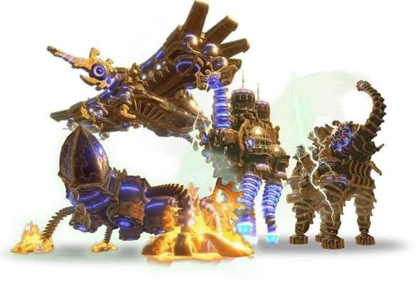
신수 바 루다니아
신수 바 루타
신수 바 나보리스
모두 현자의 이름인 다르니아, 루토, 나볼에서 따왔다.
5. 검의 시련
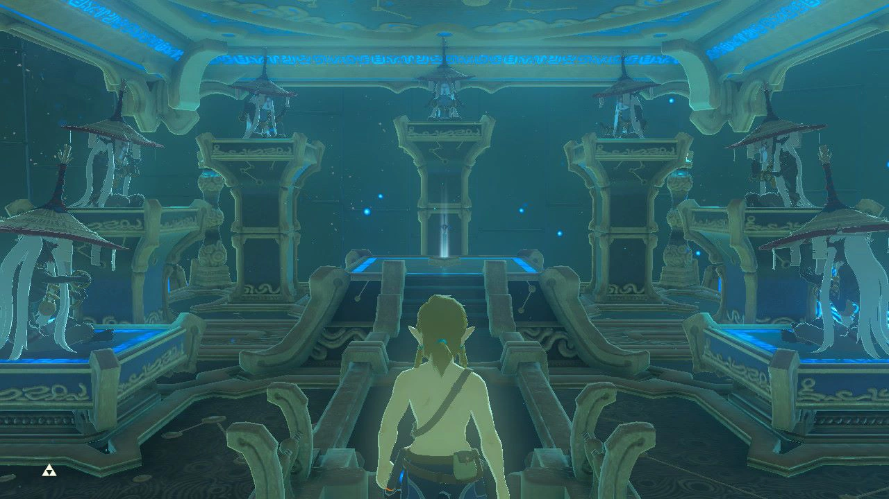
검의 시련 상급을 클리어하면 이렇게 7명의 도사가 포즈를 취하고 있는데 이들의 포즈를 유심히 바라보면
마지막 장면에서 현자들이 마왕을 봉인할 때 취하는 포즈와 같다!
마지막 장면에서 현자들이 마왕을 봉인할 때 취하는 포즈와 같다!
6. 사진의 기억
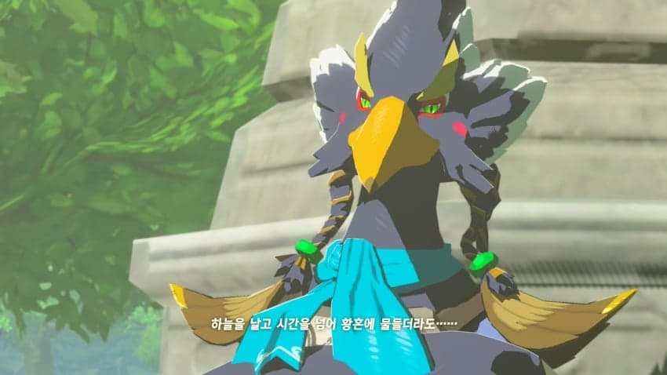
사진의 기억 컷신을 보다보면
젤다가 "하늘을 날고 시간을 넘어 황혼에 물들더라도..."
라며 시간의 용사를 언급하는 대사가 나온다
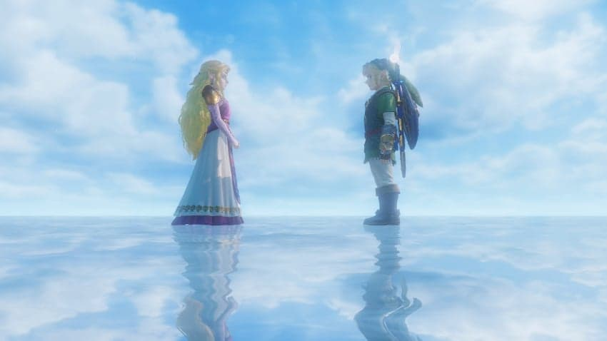
이렇듯 야숨과 왕눈에서도 시오의 흔적을 심심치 않게
찾아볼 수 있다
끝!
댓글
수집 당시 댓글 46개
젤스퍼거 · 11.08 20:45:00
· 얀젤다 · 11.08 20:48:03
キムチなべ · 11.08 20:52:29
· 얀젤다 · 11.08 20:54:19
ㅇㅇ · 11.08 20:58:16
· 얀젤다 · 11.08 21:19:29
ㅇㅇ1 · 11.08 21:00:02
· 얀젤다 · 11.08 21:19:33
ㅇㅇ · 11.08 21:01:20
· 얀젤다 · 11.08 21:19:25
ㅇㅇ2 · 11.08 21:02:43
· 얀젤다 · 11.08 21:19:21
ネモ · 11.08 21:08:31
· 얀젤다 · 11.08 21:19:11
ㅇㅇ · 11.08 21:15:25
· 얀젤다 · 11.08 21:19:07
라이트니스 · 11.08 21:17:38
· 얀젤다 · 11.08 21:19:02
· 시마시마시마린 · 11.08 21:24:04
ㅇㅇ3 · 11.08 21:48:10
· ㅁㄴㅇ · 11.09 17:19:54
ㅇㅇ · 11.08 22:42:04
ㅇㅇ · 11.08 23:05:41
ㅇㅇ4 · 11.08 23:20:29
ㅇㅇ5 · 11.09 00:37:11
ㅇㅇ · 11.09 01:08:01
ㅇㅇ · 11.09 01:34:18
ㅇㅇ · 11.09 02:35:29
· Burkan · 11.09 09:01:53
ㅇㅇ · 11.09 07:22:57
ㅇㅇ6 · 11.09 10:03:39
ㅇㅇ6 · 11.09 10:06:45
ㅇㅇ7 · 11.09 10:07:40
걍하는지거리 · 11.09 10:23:28
곢마 · 11.09 13:04:19
땨뗘(봇) · 11.09 17:01:09
DC전사쿠루미쨩 · 11.09 17:02:51
ㅇㅇ · 11.09 17:04:40
ㅇㅇ · 11.09 17:08:48
ㅇㅇ · 11.09 17:22:55
1 · 11.09 17:41:26
키나루디안마기 · 11.09 17:41:54
ㅇㅇ · 11.09 17:56:06
더블알발음은아르르 · 11.09 18:13:51
ㅇㅇ · 11.09 18:42:44
ㅇㅇ · 11.09 18:46:23